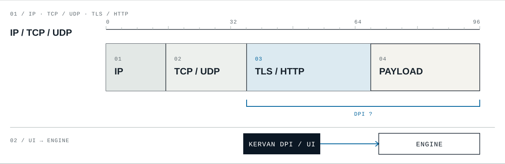

Windows
Fix04Yerel olarak test edildi. Genel yayın HOLD durumunda.
YayımlanmadıKervan DPI / açık kaynaklı masaüstü projesi
Yol Açık, Kervan Yürür.
01 / Ürün
Kervan DPI, seçilen motoru başlatmak, durdurmak ve çalışma durumunu izlemek için bir Qt arayüzü sunar. DNS seçimi ve etkinlik günlüğü de aynı pencerededir.
Paketli GoodbyeDPI ve WinDivert bileşenlerini yönetir. Fix04, bu arayüzün henüz yayımlanmamış adayıdır.
Ayrı kurulan SpoofDPI yerel HTTP proxy’sini başlatabilir. Tarayıcı veya uygulama bu proxy’yi ayrıca seçmelidir.
02 / Şema
DPI, bağlantı ve protokol alanlarını inceleyebilir. Kervan DPI ise seçilen motorun başlatma ve durdurma akışını yönetir.

01IP ve taşıma başlıkları
02Uygulama protokolü alanları
03Arayüzden motor denetimi
Kavramsal çizimdir. Gerçek paket biçimini, trafik yönlendirmesini veya doğrulanmış sistem geneli aşmayı temsil etmez.
03 / Durum
Yeni Kervan adayları henüz indirilemiyor.
Yerel olarak test edildi. Genel yayın HOLD durumunda.
YayımlanmadıÇevrimdışı testleri geçti. Yerel sistem geneli aşma henüz doğrulanmadı.
YayımlanmadıMobil uygulama planlanıyor; test edilmiş sürüm yok.
PlanlandıMobil uygulama planlanıyor; test edilmiş sürüm yok.
Planlandı04 / İsim
Bir kervan, yolu kapandığında yolculuğu bırakmaz; ilerlemek için başka bir geçit arar.
Kervan adı, DPI kaynaklı erişim kısıtlamaları karşısında çözüm arama kararlılığını anlatır. Bu bir yolculuk benzetmesidir; uygulama IP trafiğini başka bir rotaya yönlendirmez.
05 / Açık kaynak
Geliştirme GitHub’da izlenebilir. Kaynak koduna, belgelere ve yayımlanmış eski sürümlere buradan ulaşabilirsiniz.
Yayımlanmış eski aday
v1.0.1-rc1, GoodbyeDPI Turkey adıyla yayımlandı. Windows Fix04 ve Linux K4 bu sürümün parçası değildir; ikisi de yayımlanmadı.
Kervan DPI bir VPN, anonimlik veya IP maskeleme aracı değildir. Her ağda erişim garantisi vermez.
Uygulama kodu MIT lisanslıdır. GoodbyeDPI, WinDivert, SpoofDPI ve Zapret2 bağımsız upstream projelerdir; lisansları ve bildirimleri ayrıca belgelenir.